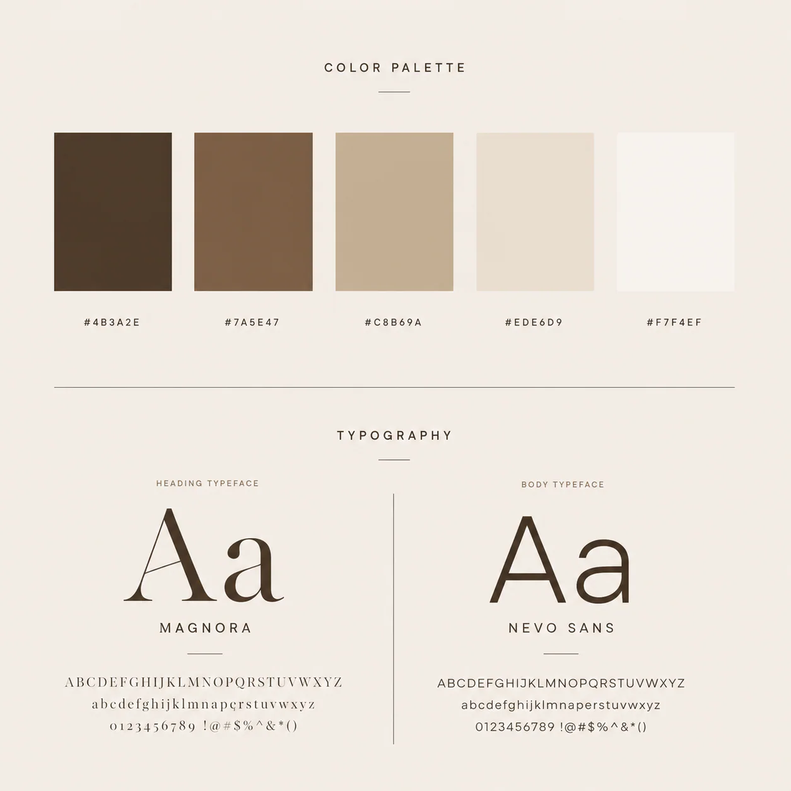
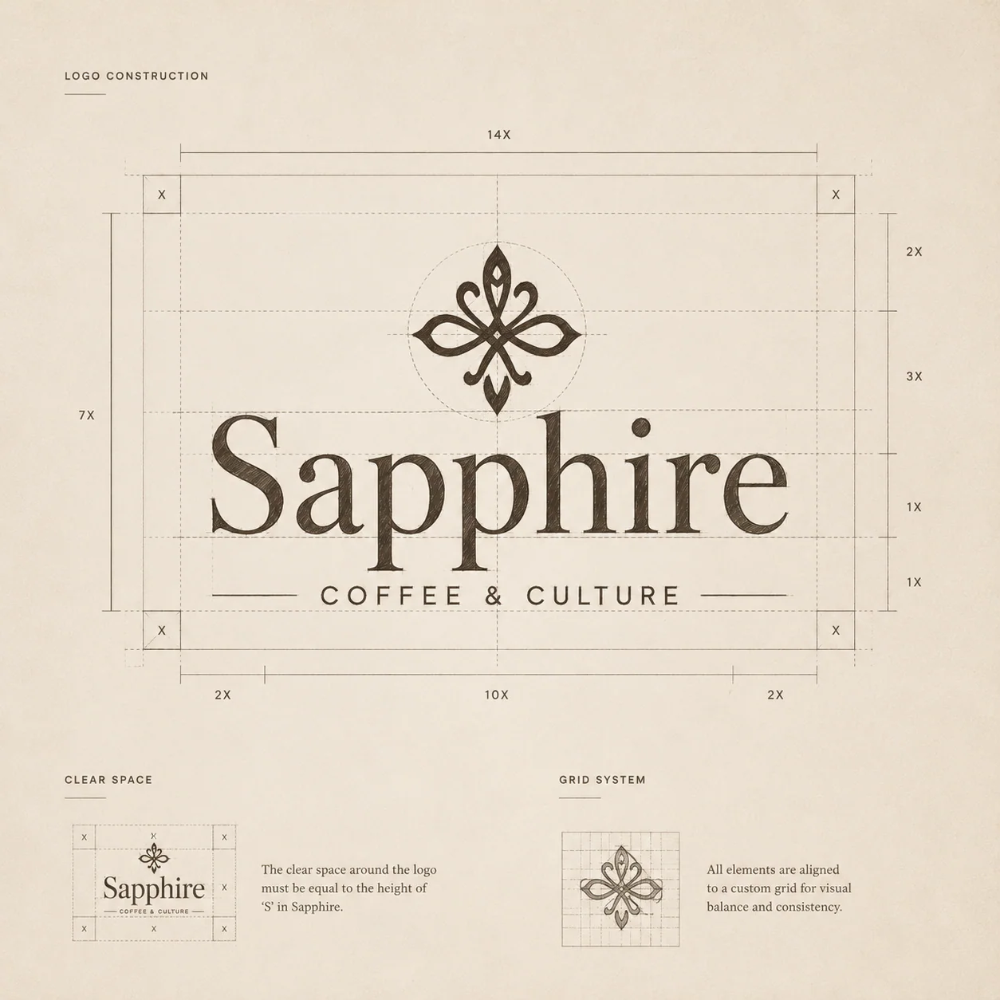
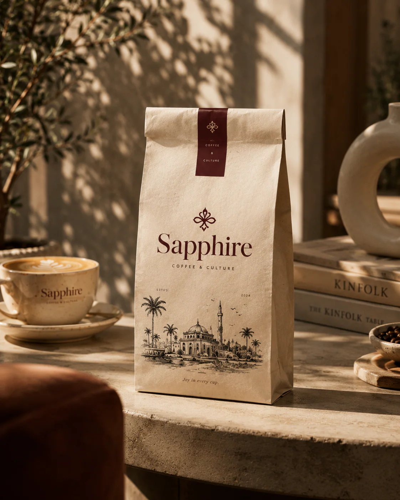
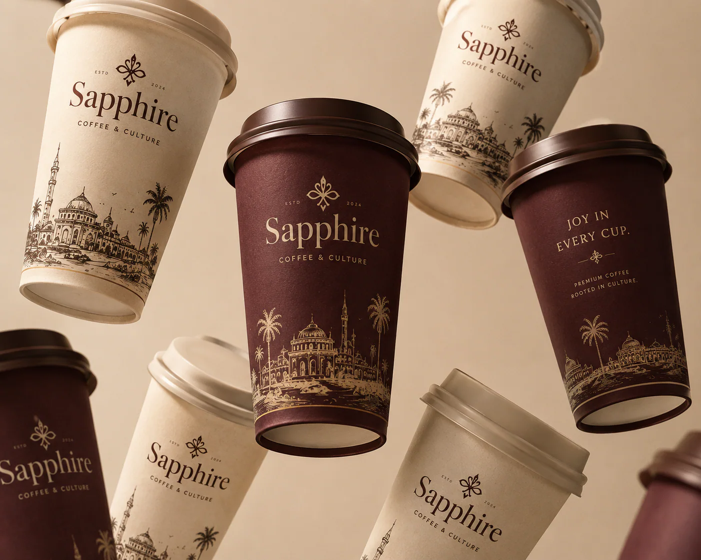
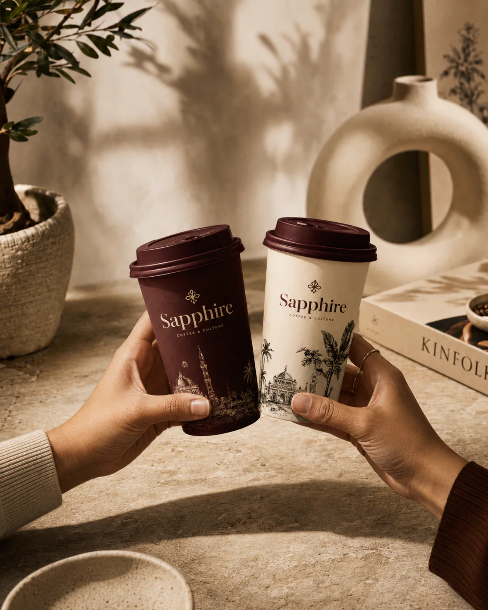
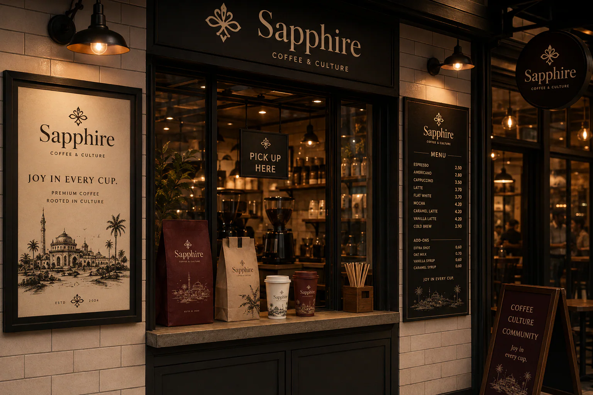
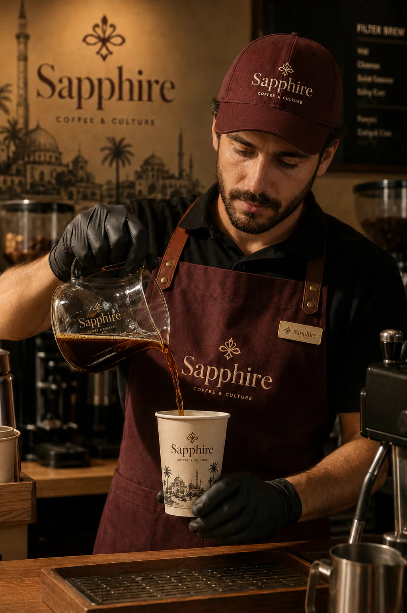
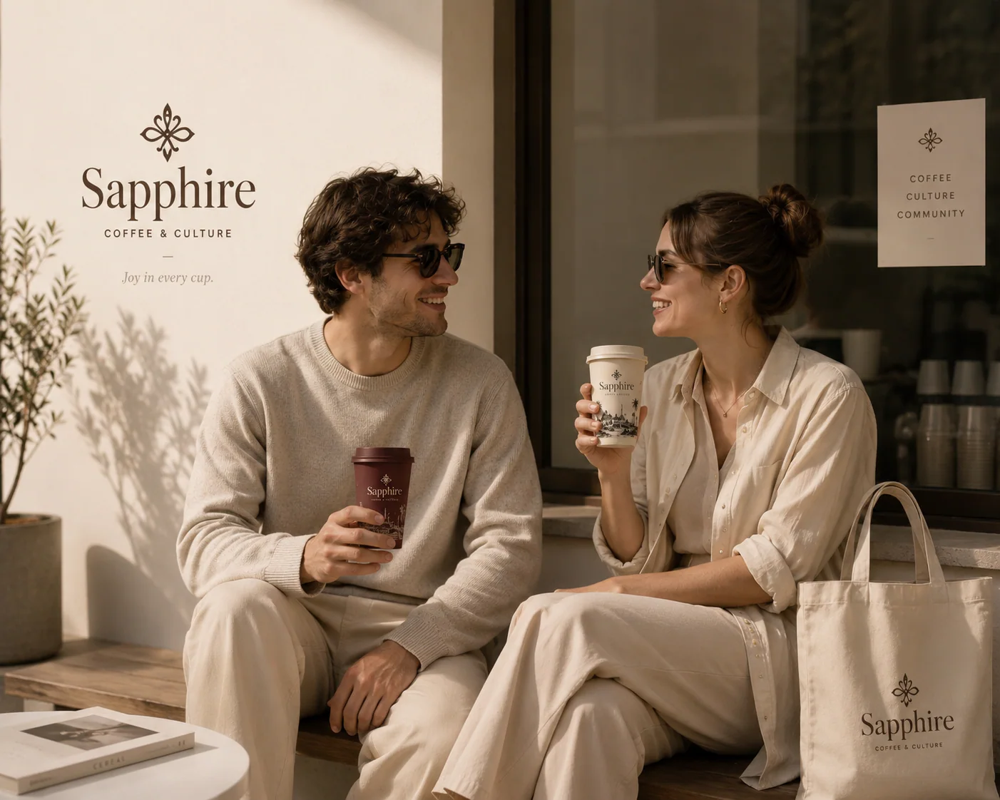
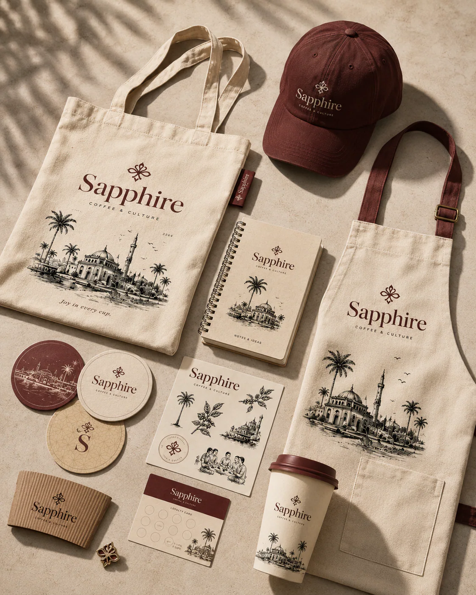

(07)
sapphire coffee & culture
(project summary)
A full brand and packaging system for Sapphire — a coffee house that sells culture as much as coffee. The mark is a hand-drawn quatrefoil sitting over a high-contrast serif wordmark, built on a 14x7 grid so it holds from a lapel pin to a shopfront fascia. Underneath it: five earth tones, one display serif, one quiet sans.
Packaging carries an engraved skyline — domes, minarets and palms — printed on kraft and deep maroon so the range reads as one family across cups, bags, aprons and totes. Every surface repeats three things: the mark, the skyline, and one line of voice — joy in every cup.
(project segments)
brand identity
packaging design
collateral & merch
(niche)
coffee — hospitality

the system
Five earth tones and a serif-over-sans pairing, fixed before a single surface was drawn.
foundations


packaging
Kraft and deep maroon, an engraved skyline, and the wordmark centred every time.
primary range



in the wild
The range doing its job — in hand, behind the bar and on the street.
application



collateral
Totes, aprons, caps, coasters and a loyalty card cut from the same cloth.
merch & print
